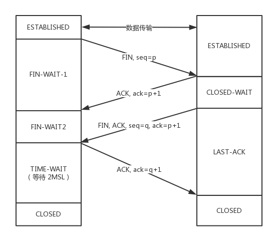

计算机网络体系结构


OSI 7层
物理层：通过网线、光缆等这种物理方式将电脑连接起来。发送高低电平（电信号）
数据链路层：定义了电信号的分组方式。MAC地址的封装和解封装。
网路层：引入网络地址用来区分不同的广播域/子网，ip的封装和解封装
传输层：建立端口到端口的通信，接受到的数据进行分段处理，再进行组装
会话层：建立和断开客户端与服务端连接
表示层：数据格式转换。如编码、数据格式转换、加密解密、压缩解压
应用层：规定应用程序的数据格式
四层网络
- 链路层：负责封装和解封装MAC地址，发送和接受ARP/RARP报文等。
- 网络层：负责路由以及把分组报文发送给目标网络或主机。
- 传输层：负责对报文进行分组和重组，并以TCP或UDP协议格式封装报文。
- 应用层：负责向用户提供应用程序，比如HTTP、FTP、Telnet、DNS、SMTP等。
为什么要分层？
1、易于实现、标准化、各层独立，就可以把大问题分割成多个小问题，利于实现；
2、灵活性好：如果某一层发生变化，只要接口不变，不会影响其他层；
3、分层后，用户只关心用到的应用层，其他层用户可以复用；
- 应用层：常见协议：
- FTP（21端口）：文件传输协议
- SSH（22端口）：远程登陆
- TELNET（23端口）：远程登录
- SMTP（25端口）：发送邮件
- POP3（110端口）：接收邮件
- HTTP（80端口）：超文本传输协议
- DNS（53端口）：运行在UDP上，域名解析服务
- DHCP
- 传输层：TCP/UDP
- 网络层：IP、NAT、RIP、ICMP
- 链路层：VLAN、STP
为什么需要IP？MAC？
需要 IP 地址
如果我们只用 MAC 地址，路由器需要记住每个 MAC 地址所在的子网是哪一个，因此需要极大的内存
需要Mac地址
需要用 MAC 地址来区分不同的设备。
TCP和IP的区别
IP协议：规定了数据传输时的基本单元和格式，定义了数据包的递交办法和路由选择。
TCP协议：提供了可靠的数据流传输服务。
负载均衡
四层负载均衡
工作于OSI模型的传输层，它主要处理消息的传递，而不管消息的内容。四层负载均衡只针对由上游服务发送和接收的网络包，而并不检查包内的具体内容是什么。
通过报文中的目标地址和端口，再加上负载均衡模式，选择内部服务器，即转发，只需要一个连接。
七层负载均衡
通过报文中的应用层内容（比如url、参数、cookie、header等），再加上负载均衡模式，选择内部服务器。
主作于OSI模型的应用层，终止网络传输并读取消息中的内容。它可以基于消息中内容（比如URL或者cookie中的信息）来做出负载均衡的决定。七层负载均衡器建立一个新的TCP连接来选择上游服务（或者再利用一个已经存在的TCP连接，通过 HTTP keepalives 的方式）并向这个服务发出请求
https怎么实现负载均衡
7层：nginx安装ssl证书，用户请求 –https–> nginx –http–> 应用
4层：用户请求–https-> 4层负载 –https-> 应用
应用场景
- 四层负载均衡SYN攻击（DOS/DDOS攻击）都会被转发到后端的服务器上；七层负载均衡SYN攻击在负载均衡设备上截止，不会影响后台服务器的正常运行
- 七层负载均衡，主要应用于HTTP协议，即网站。
优缺点
性能：4层要比7层快，因为7层代理需要解析数据包的具体内容，需要消耗额外的cpu
灵活性：4层代理不知道请求的具体内容。 7层代理可以根据请求内容（url，参数，cookie，请求头）实现动态代理、风控、审计
结论
现代机器cpu性能都很好，4层代理并没有明显的性能优势，而7层代理在业务层面优势明显，所以一般直接选择7层代理
nginx的轮询算法
- 轮询算法
- 权重轮询
- 随机均衡
- 响应速度均衡：负载均衡向后端服务器发出一个探测请求，那个回应速度最快就使用哪个
- 最少连接数
- 处理能力均衡：把请求分配给处理负荷最轻的服务器，适用于第七层负载均衡
网络设备
集线器
工作在OSI物理层，集线器的基本功能是信息分发，它把一个port接收的全部信号向全部port分发出去。
交换机的工作原理
工作在OSI数据链路层，依据MAC地址进行数据转发。
- 取得目标MAC地址后，查找交换机中存储的地址对比表（MAC地址相应的port），将数据包送到相应port。
- 目的MAC若不存在，广播到全部的port。接收port回应后，把新的MAC地址加入入内部地址表中。
网桥
工作在OSI数据链路层，能够看成是一个二层路由器。
网桥可有效的将两个局域网连起来，依据MAC地址来转发帧。
路由器的工作原理
工作在OSI网络层。可以连接多个网络或网段，依据IP进行寻址转发数据包。
报文头部
网络包的格式
MAC头+IP头+TCP头+HTTP头+HTTP正文
IP报文

（1）版本号：IP协议的版本。
（2）头部长度：4位最大为0xF，注意该字段表示单位是字（4字节）
（3）服务类型
（4）总长度: 指整个IP数据报的长度，IP数据报的最大长度为65535字节。由于MTU的限制，长度超过MTU的数据报都将被分片传输。
下来的3个字段则描述如何实现分片:
（5）标识：唯一地标识主机发送的每一个数据报，其初始值是随机的，每发送一个数据报其值就加1。同一个数据报的所有分片都具有相同的标识值
（6） 标志: 位1保留，位2表禁止分片（DF），若设置了此位，IP模块将不对数据报进行分片；位3标识更多分片（MF），除了数据报的最后一个分片，其他分片都要把它设置为1
（7） 位偏移：分片相对原始IP数据报数据部分的偏移。
（8） 生存时间：数据报到达目的地之前允许经过的路由器跳数。
（9） 协议： 区分IP协议上的上层协议。ICMP为1，TCP为6，UDP为17
（10） 头部校验和： 由发送端填充接收端对其使用CRC算法校验，检查IP数据报头部在传输过程中是否损坏
（11） 源IP地址和目的IP地址：表示数据报的发送端和接收端。一般情况下这两个地址在整个数据报传递过程中保持不变。
TCP

- 源端口号和目标端口号，各16bit
- 包的序号（seq）：32 bits
- 确认序号（ack）：32 bits
- 状态位：例如 SYN 发起连接，ACK 回复，RST 重新连接，FIN 结束连接等。TCP 是面向连接的，因而双方要维护连接的状态，这些带状态位的包的发送，会引起双方的状态变更。
- 窗口大小：接收窗口的大小，16 bits
UDP

源端口和目的端口
报文长度：16 bits，指示UDP报文的总长度。最小8 bytes，只有首部，没有数据。最大值为65535 bytes。
校验和
TCP和UDP报文区别
TCP首部开销（20字节），UDP首部开销（8字节）
UDP 包 MTU1500 - IP头(20) - UDP头(8) = 1472(Bytes)
TCP 包 MSS=MTU1500 - IP头(20) - TCP头(20) = 1460 (Bytes)
Maximum Transmit Unit，数据链路层最大传输单元
Maximum Segment Size ，网络层最大分段大小
TCP校验怎么实现？
首如果总长度为奇数个字节，则在最后增添一个位都为0的字节。
校验和字段置为0（否则就陷入鸡生蛋还是蛋生鸡的问题）。
反码相加法累加所有的16位字。
计算结果取反，作为TCP的校验和。
如果接收方比对校验和与发送方一致，数据不一定传输成功。
如果网络层不分片怎么做？
- IP头的DF置为1
- 链路上有台路由器由于各种原因MTU变小了
- IP消息到这台路由器了，路由器发现消息长度大于自己的MTU，且消息设置DF不让分片。就把消息丢弃，同时返回一个ICMP错误给发送端，并带上自己的MTU。
网络层
什么是ARP协议 ？
Address Resolution Protocol
- ARP协议完成了IP地址与物理地址的映射。每一个主机都设有一个 ARP 高速缓存，有所在的局域网上的各主机、路由器的 IP 地址到MAC地址的映射表。
- 当检查自己的ARP高速缓存中有没有目的MAC地址，如果有，就直接将数据包发到这个MAC地址，如果没有，发起一个ARP请求的广播包（ARP 请求会带上源 IP 地址到MAC地址的映射）
- 收到ARP请求的主机检查IP地址和目的主机的IP地址是否一致，如果一致，则先保存源主机的映射到自己的ARP缓存，然后给源主机发送一个ARP响应数据包。
- 源主机收到响应数据包，添加目的主机的IP地址与MAC地址的映射，再进行数据传送。源主机没有收到响应，表示ARP查询失败。
如果目的主机和源主机不在同一个局域网，通过 ARP 某个路由器的MAC地址，然后把分组发送给这个路由器，让这个路由器把分组转发给下一个网络。
IPv4怎么缓解地址不够？
NAT。使用少量的公有IP地址代表较多的私有IP地址。
什么是NAT ？
Network Address Translation， 网络地址转换，用于解决内网中的主机要和因特网上的主机通信。由NAT路由器将主机的本地IP地址转换为全球IP地址。
IPv6和IPv4区别？
地址长度不同
IPv4的地址是32位，而IPv6的地址是128位的。
地址的表示方法
IPv4地址是以十进制表示。 IPv6地址是以十六进制表示。
IPv6 相比 IPv4 的首部改进：
- 取消了首部校验和字段。 因为在数据链路层和传输层都会校验，因此 IPv6 直接取消了 IP 的校验。
- 取消了分片/重组相关字段。 分片与重组是耗时的过程， IPv6 不允许在中间路由器进行分片与重组，只能在源与目标主机分片重组，大大提高了路由器转发的速度。
- 取消选项字段。 选项字段不再是标准 IP 首部的一部分了。
IP分片和重组
包长度大于链路上物理设备的mtu时，会根据一定的方式进行切割，从而使报文得以发送出去。
把一份IP数据报文分片以后，只有到达IP报文传送的下一站才进行重新组装。
第三位标志用于指出当前分段后面是否还有更多的分段，如果此位置0，表示当前分段是数据报的最后一个分段。
IP寻址过程
一、在同一个局域网内的两台主机
- A开始只知道B的IP地址 并不知道B的mac地址，A发送ARP广播
- 交换机收到ARP广播后，将它转发到所有端口，并记录源MAC地址
- B收到ARP请求，发现和自己IP匹配，发送ARP响应
- 交换机收到B的响应，转发到A端口，同时保存B的MAC地址
- A收到回复后 ，得知B的mac地址 ，保存到本地ARP高速缓存，发送数据包
一、不在同一个局域网内的两台主机
- 先会 ARP 广播请求 网关 的 MAC 地址
- A 得到网关的 MAC 地址后，以它为数据帧的目标 MAC 地址进行封装数据，并发送出去
- Router1 收到该帧后，检查该帧的目标 IP ，查路由表，下一跳地址是 routerB ，数据重新封装，将源地址改为router1 MAC 地址，目标 MAC 地址改为 router2 MAC 址址，并发送给 router2
- routerN 发现目标 IP 就在自己的直连网段，于是查看 ARP 缓存，如果找到该 IP 的 MAC 地址，则以该 MAC 地址封装数据发送出去，如果在 ARP 缓存没找到，则发出 ARP 广播，请求该 IP 的 MAC 地址，得到对应的 MAC 地址后，再发送给主机 B
1，由于 B 的 IP 地址并没有和 A 在一个网段，所以当 A 向 B 发送数据时， A 并不会直接把数据给 B ，而是交给自己的网关，所以 A 首先会 ARP 广播请求 网关 的 MAC 地址 A 得到网关的 MAC 地址后，以它为数据帧的目标 MAC 地址进行封装数据，并发送出去
路由器怎么转发
- 路由器收到一个数据包后，会检查其目的IP地址，然后依据最长匹配原则查找路由表；
- 如果查找到匹配的路由表项之后，路由器会根据该表项所指示的出接口信息和下一跳信息将数据包转发出去；
- 如果没有找到，会查找是否有缺省路由，找到的话会依据出接口信息和下一跳信息将数据包转发出去；
- 如果都没有找到，数据包会被丢弃；
什么是ICMP协议，它的作用是什么？
互联网控制报文协议。用在主机、路由器之间传递控制消息，控制消息是指网络通不通、主机是否可达、路由是否可用等网络本身的消息。
ICMP 主要的功能包括：确认 IP 包是否成功送达、 IP 包被废弃的原因等。
ICMP 包头的类型字段，大致可以分为两大类：
- 查询报文：用于诊断的查询消息
- 差错报文：通知出错原因的错误消息
Ping的过程以及原理
使用ICMP查询报文
- 源主机首先会构建一个 ICMP 回送请求消息数据包
- 交给 IP 层。IP 层将设置目的地址，源地址，协议字段。
- 加入
MAC头。如果没有，则需要发送ARP协议查询 MAC 地址。 - 主机
B收到后，检查 MAC 地址，如符合，则接收，否则就丢弃。 - 提取IP 层，交给 ICMP 协议。
- 主机
B构建一个 ICMP 回送响应消息数据包。 - 源主机如果没有接到 ICMP 的应答包，则说明目标主机不可达；如果接收到了 ICMP 回送响应消息，则说明目标主机可达。
traceroute命令用处
诊断网络问题。定位从源主机到目标主机之间经过了哪些路由器，以及到达各个路由器的耗时。
原理
从源主机向目标主机发送IP数据报，并按顺序将TTL设置为从1开始递增的数字，导致第N个节点丢弃数据报并返回出错信息。源主机根据接收到的错误信息，确定到达目标主机路径上的所有节点的IP，以及对应的耗时。
什么是RIP?
Routing Information Protocol， 距离矢量路由协议，每个路由器维护一张表，记录该路由器到其它网络的”跳数“。
路由器到与其直接连接的网络的跳数是1，每多经过一个路由器跳数就加1；更新该表时和相邻路由器交换路由信息；路由器允许一个路径最多包含15个路由器，如果跳数为16，则不可达。
缺点
- 最大距离为15，限制了网络的规模；
- 当网络出现故障时，要经过较长的时间才能将此信息传递到所有路由器
三次握手

- 一客户端和服务端都处于 CLOSED 状态。服务端主动监听某个端口，处于 LISTEN 状态。
- 客户端主动发起连接 SYN，序列号是X，处于 SYN-SENT 状态。
- 服务端ACK 客户端的 SYN，ack的值为X+1，并且同时发送 SYN，序列号为Y，之后处于 SYN-RCVD 状态。
- 客户端收到服务端发送的 SYN 和 ACK 之后，发送ACK 的 ACK，处于 ESTABLISHED 状态，因为它一发一收成功了。
- 服务端收到 ACK 后，处于 ESTABLISHED 状态，因为它也一发一收了。
客户端发送的SYN丢失
触发重传机制，重传的次数是由 tcp_syn_retries 决定。超过重传次数会返回错误。
为什么不是2次
服务器端的应答包不知道能不能到达客户端。服务器端不能认为连接是建立好了，应答包可能会丢，会绕弯路，或者客户端已经挂了。
如果仅是两次连接。可能出现已失效的连接请求报文段又传到了服务器端：
- 客户端发起连接，由于网络情况不好，服务器端延时很长时间后收到报文。客户端将此报文认定为失效的报文，因为中间可能已经建立连接并断开。
- 服务器端收到报文后，会向客户端发起连接。此时两次握手完毕。
- 服务器端会认为已经建立了连接可以通信，服务器端会一直等到客户端发送的连接请求，而客户端对失效的报文回复自然不会处理。会陷入服务器端忙等的僵局，造成资源的浪费。
为什么不是4次
可以。但是会降低传输的效率。
四次握手是指：第二次握手时服务器端只发送ACK和acknowledge number；
而服务器端的SYN和初始序列号在第三次握手时发送。
出于优化目的，四次握手中的二、三可以合并。
第三次握手中，ACK丢失会怎样？
服务器：
由于Server没有收到ACK确认，因此会重发之前的SYN+ACK（默认重发五次，之后自动关闭连接进入CLOSED状态），Client收到后会重新传ACK给Server。
客户端：
- 如果客户端向服务器发送数据，数据头部的ACK是为1的，所以服务器收到数据之后会读取 ACK number，进入 establish 状态
- 在服务器进入CLOSED状态之后，如果Client向服务器发送数据，服务器会以RST包应答。
初始序列号是什么？
TCP连接的一方A，随机选择一个32位的序列号作为发送数据的初始序列号，以该序列号为原点，对要传送的数据进行编号，以便另一方B可以确认什么样的数据编号是合法的；
同时A还可以确认B收到的每一个字节，如果A收到了B的确认编号是2001，就说明编号为1001-2000的数据已经被B成功接受。
序列号是随机取的吗？为什么？
1）攻击维度
如果TCP每次连接都使用固定初始序列号，黑客可以很方便模拟任何IP与服务器建立连接。
2）TCP连接稳定维度
假设客户端与服务器连接状况不好，那么之前交互的报文很可能在连接已断但是还没到server。
如果初始序列号是固定的，那很可能在新连接建立后，上次连接通信的报文才到达，这就全乱了。
accept connect listen对应三次握手什么阶段
- 当服务端调用 listen 函数进行监听。 这个时候客户端就可以发起连接
- 客户端可以通过 connect 函数发起连接。指明要连接的 IP 地址和端口号，三次握手。 内核会给客户端分配一个临时的端口。
- 一旦握手成功，服务端的 accept就会返回另一个 Socket。
四次挥手

客户端进程发出连接释放报文FIN，序列号为seq=p，并且停止发送数据。客户端进入FIN-WAIT-1。
服务器收到后，发出确认报文ACK，ack=p+1，此时，服务端就进入了CLOSE-WAIT。TCP服务器通知高层的应用进程，客户端已经没有数据要发送了，但是服务器若发送数据，客户端依然要接受。这个状态还要持续一段时间，也就是整个CLOSE-WAIT状态持续的时间。
客户端收到Ack后，此时，客户端就进入FIN-WAIT-2状态，等待服务器发送连接释放报文（在这之前还需要接受服务器发送的最后的数据）。
服务器将最后的数据发送完毕后，就向客户端发送连接释放报文FIN，ack=p+1，由于在半关闭状态，服务器很可能又发送了一些数据，假定此时的序列号为seq=q，此时，服务器就进入了LAST-ACK状态，等待客户端的确认。
客户端收到服务器的连接释放报文后，必须发出确认ACK，ack=q+1，此时，客户端就进入了TIME-WAIT状态。此时TCP连接还没有释放，必须经过2MSL的时间后，才进入CLOSED状态。
服务器只要收到了客户端发出的确认，立即进入CLOSED状态。
服务器的ACK丢失，会怎样？
客户端没有收到ACK确认，会重新发送FIN请求。
TIME_WAIT意义是什么？
第四次挥手时，客户端ACK有可能丢失，TIME_WAIT状态就是用来重发可能丢失的ACK报文。如果服务器没有收到ACK，就会重发FIN，如果客户端在2*MSL的时间内收到了FIN，就会重新发送ACK并再次等待2MSL。
MSL（Maximum Segment Lifetime），指一个片段在网络中最大的存活时间，2MSL就是一个发送和一个回复所需的最大时间。如果直到2MSL，Client都没有再次收到FIN，那么Client推断ACK已经被成功接收，则结束TCP连接。
2MSL作用
确保最后一个确认报文能够到达。如果 B 没收到 A 发送来的确认报文，那么就会重新发送连接释放请求报文，A 等待一段时间就是为了处理这种情况的发生。
等待一段时间是为了让本连接持续时间内所产生的所有报文都从网络中消失，使得下一个新的连接不会出现旧的连接请求报文。
超过了 2MSL ，依然没有收到FIN 的 ACK，重发 FIN，A 发送 RST，B 就知道 A 早就跑了。
建立连接是三次握手，关闭连接四次挥手？
- 建立连接时， 服务器收到SYN报文后，把ACK和SYN放在一个报文里发送给客户端。
- 关闭连接时，服务器收到对方的FIN报文时，仅仅表示对方不再发送数据，自己也未必全部数据都发送给对方了，所以需要等到数据发完之后再发FIN，断开服务器到客户端的数据传送。
如果已经建立了连接，但是客户端突然出现故障了怎么办？
- TCP设有一个保活计时器。服务器每收到一次客户端的请求后都会重新复位这个计时器，时间通常是设置为2小时
- 若两小时还没有收到客户端的任何数据，服务器就会发送一个探测报文段，以后每隔75秒发送一次。若一连发送10个探测报文仍然没反应，服务器就认为客户端出了故障，接着就关闭连接。
服务端出现大量close_wait原因
服务端程序忘记主动关闭连接，这个资源会一直被程序占着。
会导致to many open files。
服务器保持了大量TIME_WAIT状态
一些爬虫服务器或者WEB服务器上经常会遇到这个问题，在完成一个爬取任务之后，发起主动关闭连接，进入TIME_WAIT的状态，2MSL时间之后，彻底关闭回收资源。
解决方法：优化系统参数
#表示开启重用。允许将TIME-WAIT sockets重新用于新的TCP连接，默认为0，表示关闭
net.ipv4.tcp_tw_reuse = 1
#表示开启TCP连接中TIME-WAIT sockets的快速回收，默认为0，表示关闭
net.ipv4.tcp_tw_recycle = 1 流量控制
TCP如何实现流量控制？

使用滑动窗口协议实现流量控制。防止发送方发送速率太快，接收方缓存区不够导致溢出。
- 接收方会维护一个接收窗口 ，接受窗口的大小是根据自己的资源情况动态调整的，在返回ACK时将接受窗口大小放在TCP报文中的窗口字段告知发送方。
- 发送窗口的大小不能超过接受窗口的大小，只有当发送方发送并收到确认之后，才能将发送窗口右移。
- 发送窗口的上限为接受窗口和拥塞窗口中的较小值。接受窗口表明了接收方的接收能力，拥塞窗口表明了网络的传送能力。
什么是零窗口？
- 如果接收方没有能力接收数据，就会将接收窗口设置为0，这时发送方必须暂停发送数据。
- 启动一个持续计时器，到期后发送一个大小为1字节的探测数据包，以查看接收窗口状态。
- 如果接收方能够接收数据，就会在返回的报文中更新接收窗口大小，恢复数据传送。
TCP的拥塞控制是怎么实现的？
拥塞控制主要由四个算法组成：慢启动、拥塞避免、快重传 、快恢复
慢启动：刚开始发送数据时，先把拥塞窗口设置为一个最大报文段MSS的数值，每收到一个新的确认报文之后，就把拥塞窗口加1个MSS。这样每经过一个传输轮次（或者说是每经过一个往返时间RTT），拥塞窗口的大小就会加倍
拥塞避免：当拥塞窗口的大小达到慢开始门限时，拥塞窗口大小不再指数增加，而是线性增加，即每经过一个传输轮次只增加1MSS.
无论在慢开始阶段还是在拥塞避免阶段，只要发送方判断网络出现拥塞（其根据就是没有收到确认），就要把慢开始门限ssthresh设置为出现拥塞时的发送方窗口值的一半（但不能小于2）。然后把拥塞窗口cwnd重新设置为1，执行慢开始算法。（这是不使用快重传的情况）
- 快重传：接收方在收到一个失序的报文段后就立即发出重复确认，而不要等到自己发送数据时捎带确认。发送方只要一连收到三个重复确认就应当立即重传对方尚未收到的报文段，而不必继续等待设置的重传计时器时间到期。
- 快恢复：当发送方连续收到三个重复确认时，就把慢开始门限减半，然后执行拥塞避免。不执行慢开始算法的原因：因为如果网络出现拥塞的话就不会收到好几个重复的确认，所以发送方认为现在网络可能没有出现拥塞。
为什么需要3次重复确认？
主要的考虑还是要区分丢包和乱序。两次duplicated ACK时一定是乱序造成的，三次duplicated ACK时很可能是丢包造成的！四次duplicated ACK更可能是丢包造成的！但是这样的响应策略太慢。丢包肯定会造成三次duplicated ACK!综上是选择收到三个重复确认时窗口减半效果最好。
慢启动对HTTP有什么影响？HTTP如何解决这种影响？
- 建立TCP连接都经历慢启动。
- 如果HTTP是短连接，有可能还没有经历完TCP慢启动，这个TCP连接就断开了。
- 为了提升性能，我们可以开启HTTP的持久连接也就是后面要说的keepalive。
HTTP对TCP的缺点做了那些改进？
最常见的影响HTTP性能的包括：
- TCP连接建立，三次握手
- TCP慢启动
- TCP延迟确认
- Nagle算法
HTTP的keep alive，实现连接复用
我们可以关闭或者调整TCP延迟确认。
可以在操作系统上禁用或者在HTTP程序中设置TCP_NODELAY来禁用Nagle算法
TCP如何最大利用带宽？
TCP速率受到三个因素影响
- 窗口：滑动窗口大小
- 带宽：这里带宽是指单位时间内从发送端到接收端所能通过的“最高数据率”，是一种硬件限制。
- RTT：表示从发送端到接收端的一去一回需要的时间，TCP在数据传输过程中会对RTT进行采样
TCP与UDP
TCP与UDP的区别
- TCP是面向连接的，UDP是无连接的；
- TCP是可靠的，UDP不可靠；
- TCP只支持点对点通信，UDP支持一对一、一对多、多对一、多对多；
- TCP是面向字节流的，UDP是面向报文的；
- TCP有拥塞控制机制，UDP没有。它意识到包丢弃了或者网络的环境不好了，就会根据情况调整自己的行为，看看是不是发快了，要不要发慢点。UDP 就不会，应用让我发，我就发，管它洪水滔天。
- TCP首部开销（20字节）比UDP首部开销（8字节）要大
1：UDP发送数据之前不需要建立连接
2：UDP接收方收到报文后，不需要给出任何确认
4：面向字节流是指发送数据时以字节为单位，一个数据包可以拆分成若干组进行发送，而UDP一个报文只能一次发完。
什么时候选择TCP，什么时候选UDP？
对某些实时性要求比较高的情况，选择UDP，比如游戏，媒体通信，实时视频流（直播），即使出现传输错误也可以容忍；
其它大部分情况下，HTTP都是用TCP，因为要求传输的内容可靠，不出现丢失
TCP报文确认机制
- 为了保证顺序性，每一个包都有一个 ID。
- 在建立连接的时候，确定起始的 ID ，然后按照 ID 一个个发送。
- 为了保证不丢包，对于发送的包都要进行应答。
- 应答某个之前的 ID，表示都收到了，这种模式称为累计确认或者累计应答
TCP发数据过程中必须按顺序接收吗
TCP报文段作为IP数据来传输，在IP数据报的到达可能会失序，因此TCP报文段的到达也存在失序的可能。
TCP将对收到的数据进行重新排列，确保顺序正确后再交给应用层。
TCP发送窗口过大会怎么样？
接收端缓存溢出或者网络拥塞
为什么会发生网络卡顿现象？
丢包。需要超时重传，慢开始门限减半，然后执行拥塞避免算法。
当拥塞窗口的大小达到慢开始门限时，开始执行拥塞避免算法，拥塞窗口大小不再指数增加，而是线性增加，即每经过一个传输轮次只增加1MSS.
TCP粘包
什么是TCP粘包问题？
发送方包数据到达接收方时粘成了一包，从接收缓冲区来看，后一包数据的头紧接着前一包数据的尾。
造成TCP粘包的原因
（1）发送方原因
TCP默认使用Nagle算法（主要作用：减少网络中报文段的数量），而Nagle算法主要做两件事：
只有上一个分组得到确认，才会发送下一个分组
收集多个小分组，在一个确认到来时一起发送
（2）接收方原因
TCP接收到数据包时，应用层并不会立即处理。
数据包保存在接收缓存里，然后应用程序主动从缓存读取收到的分组。
如果TCP接收数据包到缓存的速度大于应用程序从缓存中读取数据包的速度，多个包就会被缓存，应用程序就有可能读取到多个首尾相接粘到一起的包。
什么时候需要处理粘包现象？
- 如果发送方发送的多组数据本来就是同一块数据的不同部分，比如一个文件的多个部分，不需要处理粘包
- 如果多个分组毫不相干，甚至是并列关系，需要处理粘包
如何处理粘包现象？
（1）发送方
通过关闭Nagle算法来解决，使用TCP_NODELAY选项来关闭。
（2）接收方应用层
应用层的解决办法简单可行，不仅能解决接收方的粘包问题，还可以解决发送方的粘包问题。
解决办法：循环处理，应用程序从接收缓存中读取分组时，读完一条数据，就应该循环读取下一条数据。
TCP 半包
原因
- MSS/MTU限制
- 程序写入数据的字节大小大于套接字发送缓冲区的大小
应用层解决
（1）在包尾增加分割符，比如回车换行符进行分割。
（2）消息定长，例如每个报文的大小为固定长度200字节，如果不够，空位补空格
（3）将消息分为消息头和消息体，消息头中包含表示消息总长度（或者消息体长度）的字段。
UDP会不会产生粘包问题呢？
TCP采用了基于流的传输，基于流的传输不认为消息是一条一条的，是无保护消息边界的。
UDP面向消息传输的，是有保护消息边界的，接收方一次只接受一条独立的信息，所以不存在粘包问题。
HTTP可以使用UDP吗？
不可以，HTTP需要基于可靠的传输协议，而UDP不可靠
UDP协议应用
- DHCP。一般的获取 IP 地址都是内网请求，而且一次获取不到IP 又没事，过一会儿还有机会。
- PXE 可以在启动的时候自动安装操作系统，操作系统镜像的下载使用的 TFTP，这个也是基于 UDP 协议的。
如何在应用层保证udp可靠传输
最简单的方式是在应用层模仿传输层TCP的可靠性传输。下面不考虑拥塞处理时：
- 1、实现确认机制，确保数据发送到对端
- 2、实现发送和接收缓冲区，主要是用户超时重传。
面向连接和无连接的区别
面向连接的协议会先建立连接。例如，TCP 会三次握手，而 UDP 不会。
建立连接，是为了建立一定的数据结构来维护双方交互的状态。
TCP如何保证传输的可靠性
- 数据包校验：如果接收方检测到校验和有差错，则TCP段会被直接丢弃。
- 对失序数据包重新排序（TCP报文具有序列号）
- 丢弃重复数据
- 应答机制：接收方收到数据之后，会发送一个确认；
- 超时重发：发送方发出数据之后，启动一个定时器，超时未收到接收方的确认，则重新发送这个数据；或者是快速重传；
- 流量控制：确保接收端能够接收发送方的数据而不会缓冲区溢出
- 拥塞控制：当网络拥塞时，减少数据的发送
TCP keepalive实现原理
可以检测死连接，TCP会在空闲了一定时间后发送数据给对方。
- 如果主机可达，对方就会响应ACK应答。
- 如果可达，但应用程序退出，对方就发RST应答，发送TCP撤消连接。
- 如果可达，但应用程序崩溃，对方就发FIN消息。
- 如果对方主机不响应ack/rst，继续发送直到超时，就撤消连接。默认二个小时。
TCP的延迟ACK机制？
接收方在收到数据后，并不会立即回复ACK，而是延迟一定时间。
- ACK是可以合并的，如果连续收到两个TCP包，只要回复最终的ACK就可以了，降低网络流量。
- 如果接收方有数据要发送，在发送数据的TCP数据包里，带上ACK信息。可以避免ACK以一个单独的TCP包发送，减少网络流量。
对于tcp来说，服务端断电和进程挂掉有什么区别？
服务进程crash：服务端会发送RST报文
进程结束：服务端发送FIN报文
主机关机：init进程会给所有进程发送SIGTERM信号，等待一段时间，然后再给所有仍在运行的进程发送SIGKILL信号。同进程结束。
主机宕机：服务器始终不能应答
主机宕机后重启：收到不存在连接的报文，响应RST。
单机最大tcp连接数
系统用一个4四元组来唯一标识一个TCP连接：{local ip, local port,remote ip,remote port}。
client最大tcp连接数：1-65535
server最大tcp连接数：客户端ip数×客户端port数。在实际环境中，受到内存和允许的文件描述符个数限制。
SYN泛洪攻击
攻击端利用伪造的IP地址向被攻击端发出三次握手请求，而被攻击端发出的响应报文将永远发送不到目的地。
被攻击端在等待关闭这个连接的过程中消耗了资源，如果有成千上万的这种连接，主机资源将被耗尽，从而达到攻击的目的。
解决方法
1、降低SYN timeout时间，使得主机尽快释放半连接的占用
2、采用SYN cookie设置，如果短时间内连续收到某个IP的重复SYN请求，则认为受到了该IP的攻击，丢弃来自该IP的后续请求报文
3、使用防火墙或者代理设备，缓冲SYN洪泛攻击
MSL、TTL和RTT的区别
- MSL ，Maximum Segment Lifetime，报文最大生存时间，报文在网络上存在的最长时间，超过这个时间报文将被丢弃。
- ip头中有一个TTL， time to live，一个ip数据报可以经过的最大路由数，每经过一个处理他的路由器此值就减1，当此值为0则数据报将被丢弃，同时发送ICMP报文通知源主机。
- RTT，round-trip time，客户端到服务器往返所花时间
多久没收到会丢失重传，往返时间怎么预估
每个数据包都有相应的计时器，一旦超过 RTO 而没有收到 ACK，就重发该数据包。
- 估计往返时间，需要 TCP 通过采样 RTT 的时间，然后进行加权平均，算出一个值，而且这个值还是要不断变化的，因为网络状况不断的变化。除了采样 RTT，还要采样 RTT 的波动范围，计算出一个估计的超时时间。
TCP和UDP可以同时监听相同的端口吗
可以。linux是以协议、ip、端口来绑定端口的，所以不同协议相同的ip和端口也是可以绑定成功的。
QUIC
自定义连接机制
QUIC 维护连接，不再以四元组标识，而是以一个 64 位的随机数作为 ID 来标识，而且 UDP 是无连接的，所以当 IP 或者端口变化的时候，只要 ID 不变，就不需要重新建立连接。
避免了当手机信号不稳定或者在 WIFI 和移动网络切换时，导致重连，从而进行再次的三次握手。
自定义重传机制
QUIC 也有个序列号，是递增的。任何一个序列号的包只发送一次，下次就要加一了。
发送的数据在这个数据流里面有个偏移量 offset，可以通过 offset 查看数据发送到了哪里，这样只要这个 offset 的包没有来，就要重发；如果来了，按照 offset 拼接，还是能够拼成一个流。
无阻塞的多路复用
同一条 QUIC 连接上可以创建多个 stream，来发送多个 HTTP 请求。
一个连接上的多个 stream 之间没有依赖。
假如 stream2 丢了一个 UDP 包，后面跟着 stream3 的一个 UDP 包，虽然 stream2 的那个包需要重传，但是 stream3 的包无需等待，就可以发给用户。
自定义流量控制
应用层
DNS
解析流程
从客户端到本地DNS服务器属于递归查询，而DNS服务器之间是迭代查询。
- 客户端会发出 DNS 请求，发给本地域名服务器。本地 DNS 由你的网络服务商，如电信、移动等自动分配。
- 本地 DNS 收到来自客户端的请求。如果能找到 ，它直接就返回 IP 地址。如果没有，本地 DNS 请求根域名服务器。根域名服务器是最高层次的，全球共有 13 套。
- 根 DNS 收到来自本地 DNS 的请求，发现后缀是 .com，返回对应顶级域名服务器的地址
- 本地 DNS 请求顶级域名服务器，顶级域名服务器负责管理二级域名，比如163.com。顶级域名服务器返回对应的权威 DNS 服务器的地址
- 本地 DNS 请求权威 DNS 服务器，权限 DNS 服务器返回 IP 地址到本地 DNS。
- 本地 DNS 再将 IP 地址返回客户端，客户端和目标建立连接。
如果dns解析得到ip地址之后请求超时，那么会重新解析吗
浏览器得到了域名对应的 IP 地址，并将 IP 地址缓存起来。不需要重新解析
DNS使用TCP协议还是UDP协议
区域传送时使用TCP
辅域名服务器会定时向主域名服务器进行查询以便了解数据是否有变动。如有变动，则会执行一次区域传送，进行数据同步。区域传送将使用TCP而不是UDP，因为数据同步传送的数据量比一个请求和应答的数据量要多得多。 TCP保证了数据的准确性。
域名解析时使用UDP协议
客户端向DNS服务器查询域名，一般返回的内容都不超过512字节，用UDP传输即可。不用经过TCP三次握手，这样DNS服务器负载更低，响应更快。
DNS 查询选择 UDP 或者 TCP 两种不同协议时的主要原因：
- UDP 协议
- DNS 查询的数据包较小；
- UDP 协议的额外开销小、有着更好的性能表现；
- TCP 协议
- 导致 DNS 响应经常超过 MTU 造成数据的分片和丢失，需要依靠可靠的 TCP 协议完成数据的传输；
- 数据不断增加，TCP 协议头以及三次握手带来的额外开销比例逐渐降低；
根DNS服务器如何承受并发
先访问DNS缓存、本地DNS服务器。同时有13台根DNS服务器作负载均衡。
根DNS服务器只存储一级域名的映射，实际不做域名的解析。
DNS劫持是什么
域名劫持，DNS重定向。DNS查询没有得到正确的解析，以致引导user访问到恶意的网站，从而窃取用户隐私，或者进行某些恶意的操作。
DNS的防范劫持
- 开启防火墙等，防止恶意软件，木马病毒感染计算机
- 改变路由器默认密码，防止攻击者修改路由器的DNS配置指向恶意的DNS服务器
DNS缺点
域名缓存问题：直接返回缓存数据。上次进行的缓存，不一定是这次离最近的地方，可能会绕远路。
解析延迟：DNS的查询过程需要递归遍历多个DNS服务器，才能获得最终结果。可能会带来一定的延时。
域名转发问题：如果是A运营商将解析的请求转发给B运营商，B去权威DNS服务器查询的话，权威服务器会认为你是B运营商的，就返回了B运营商的网站地址，结果每次都会跨运营商。
出口NAT问题：做了网络地址转化后，没法通过地址来判断客户到底是哪个运营商，极有可能误判运营商，导致跨运营商访问。
HTTPDNS
HTTPDNS使用HTTP与DNS服务器交互，代替传统的基于UDP的DNS协议，域名解析请求直接发送到HTTPDNS服务端，从而绕过运营商的Local DNS
特性
防止域名劫持
由于 HttpDns 是通过 IP 直接请求 HTTP 获取服务器 A 记录地址，不存在向本地运营商询问 domain 解析过程，所以从根本避免了劫持问题。
精准调度
HTTPDNS能够直接获取到用户的IP地址，从而实现精确定位与导流
用户连接失败率下降
通过算法降低以往失败率过高的服务器排序。
FTP
文件传输协议（File Transfer Protocol，FTP）是用于在网络上进行文件传输的一套标准协议， 使用 TCP 传输，为数据传输提供可靠保证。
Port模式
- FTP 客户端首先和服务器的TCP 21端口建立连接，用来发送命令
- 客户端需要接收数据的时候在这个通道上发送PORT命令。告知服务端接收端口。服务器端使用TCP 20端口向客户端端口发送连接请求，建立一条数据链路来传送数据。
Passive模式
- 客户端向服务器的FTP端口发送连接请求，服务器接受连接，建立一条命令链路。
- 服务器在命令链路上用PASV命令告诉客户端端口号。于是客户端向服务器的端口发送连接请求，建立一条数据链路来传送数据。
SSH
用于计算机之间的加密登录。采用了公钥加密。
整个过程是这样的：
（1）远程主机收到用户的登录请求，把自己的公钥发给用户。
（2）用户使用这个公钥，将登录密码加密后，发送回来。
（3）远程主机用自己的私钥，解密登录密码，如果密码正确，就同意用户登录。
如果有人截获了登录请求，然后冒充远程主机，将伪造的公钥发给用户，那么用户很难辨别真伪。
中间人攻击
口令登录
确认host主机的真实性：首次连接确认公钥指纹。
公钥登录
不需要输入密码。
- 是用户将自己的公钥储存在远程主机上。
- 登录的时候，远程主机会向用户发送一段随机字符串，用户用自己的私钥加密后，再发回来。
- 远程主机用事先储存的公钥进行解密，如果成功，就证明用户是可信的，直接允许登录shell。
路由协议
路由分静态路由和动态路由，静态路由可以配置复杂的策略路由，控制转发策略；
动态路由主流算法有两种，距离矢量算法和链路状态算法。BGP 协议和OSPF 协议。
加密算法
DES加密算法
DES（Data Encryption Standard）数据加密标准算法，是对称性加密算法。
工作原理
当需要加密的时候就用key对data加密，生成密码形式的data作为输出结果
解密就需要再利用key对data进行解密获得原文密码作为输出。
MD5加密算法
Message-Digest-Algorithm 信息摘要算法第五代。Hash算法一代，是一种单向加密算法，可以将输入的信息加密转换为128位固定长度的散列值，一般用于检验数据传输过程中的完整性。
优势：
- 防篡改，在传输过程中一旦被串改，那么计算出的MD5值一定不同。
- 计算速度快。加密速度快，不需要秘钥。
缺点:
- 仍然存在两种不同数据会发生碰撞。
- MD5的安全性：直接MD5存入数据库，若数据库被破解，通过MD5反查会查到密码，需要随机盐值的配合。
SHA1加密算法
SHA-1是一种数据加密算法，该算法的思想是取一串输入码，并把它们转化为长度较短、位数固定的输出序列即散列值的过程。
RSA加密算法
RSA是一种非对称加密算法。
目前最有影响力的公钥加密算法，将两个大素数相乘十分容易，但那时想要对其乘积进行因式分解却极其困难，因此可以将乘积作为加密公钥，而两个大素数组合成私钥。 公钥加密，私钥解密。
为什么密码加盐
Salt 可以是任意字母、数字、或是字母或数字的组合，但必须是随机产生的，每个用户的 Salt 都不一样，用户注册的时候，数据库中存入 MD5（明文密码 + Salt）。
即便数据库泄露了，但是由于密码都是加了 Salt 之后的散列，数据字典已经无法直接匹配，明文密码被破解出来的概率也大大降低
为什么网络中会发生丢包？
物理线路故障
设备故障：如网卡是坏的，交换机的某个端口出现了物理故障，光模块等。接收到的分组校验出错
网络拥塞：分组在网络中超出最大存活时间、路由器接收分组数量达到上限后，会丢弃多余分组
小端和大端字节序，这个对什么产生影响，做什么事情会出现问题
- 大端字节序：高位字节在前，低位字节在后，这是人类读写数值的方法。
- 小端字节序：低位字节在前，高位字节在后
计算机一般先处理低位字节，效率比较高，因为计算都是从低位开始的。
人类还是习惯大端字节序。所以，其他的场合几乎都是大端字节序，比如网络传输和文件储存。
传一个字符串，定义为大端和小端一样吗？如果传一个数字有影响吗？
大小端是面向多字节类型定义的，比如2字节、4字节、8字节整型、长整型、浮点型等，单字节的字符串一般不用考虑。
网卡接收数据流程
- 1： 数据包从外面网络进入物理网卡。如果目的地址不是该网卡（且该网卡没有开启混杂模式）该包会被网卡丢弃。
- 2： 网卡将数据包通过DMA的方式写入到指定的内存地址，该地址由网卡驱动分配并初始化。
- 3： 网卡通过硬件中断通知CPU，告诉它有数据来了
- 4： CPU根据中断表，调用中断函数，中断函数会调用网卡驱动程序中相应的函数
- 5： 先禁用网卡的中断，表示驱动程序已经知道内存中有数据了，告诉网卡下次再收到数据包直接写内存就可以了，不要再通知CPU了，这样可以提高效率，避免CPU不停的被中断。
- 6： 启动软中断。硬件中断处理函数返回。（由于硬中断处理程序执行的过程中不能被中断，所以如果它执行时间过长，会导致CPU没法响应其它硬件的中断，于是内核引入软中断，耗时的部分移到软中断处理函数里面来慢慢处理。）
- 7： 内核中的ksoftirqd进程专门负责软中断的处理，读取写到内存中的数据包。
- 8： 调用协议栈相应的函数，将数据包交给协议栈处理。
- 8.1：进入网络层，如果目的IP是本地IP，发送到传输层
- 8.2：根据IP和端口找对应的socket，通知socket数据包已经准备好，如果没有找到相应的socket，那么该数据包将会被丢弃。
- 8.3：应用层一般有两种方式接收数据，一种是recvfrom函数阻塞在那里等着数据来，这种情况下当socket收到通知后，recvfrom就会被唤醒，然后读取接收队列的数据；另一种是通过epoll或者select监听相应的socket，当收到通知后，再调用recvfrom函数去读取接收队列的数据。
- 9： 待内存中的所有数据包被处理完成后（即poll函数执行完成），启用网卡的硬中断，这样下次网卡再收到数据的时候就会通知CPU
WebSocket 和 HTTP 的区别
- http 协议必须要有客户端发起，然后服务器返回结果。
- 为了解决客户端发起多个 http 请求轮训问题， webSocket 协议下客服端和浏览器可以同时发送信息。降低了服务器压力，减少了部分多余信息。
参考
https://blog.csdn.net/weixin_41047704/article/details/85340311
https://blog.csdn.net/gdutxiaoxu/article/details/107393249
https://blog.csdn.net/weixin_38035852/article/details/81667160